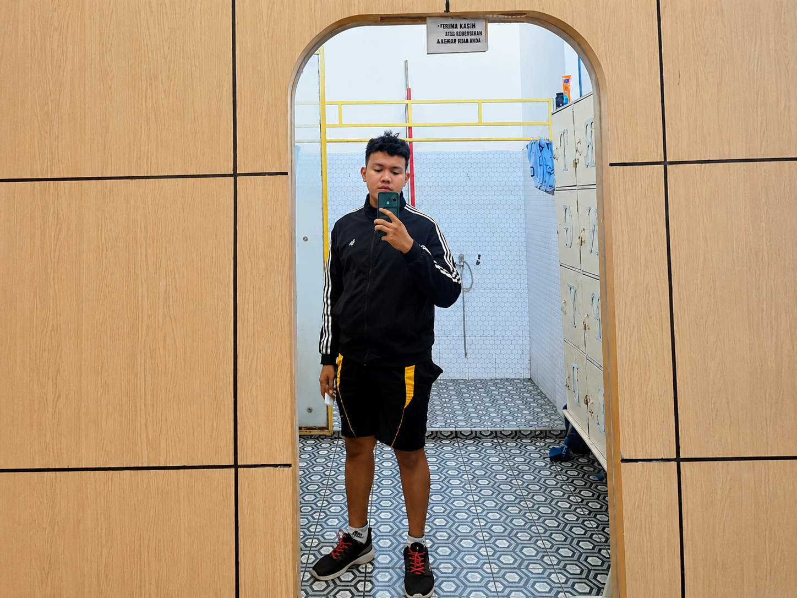
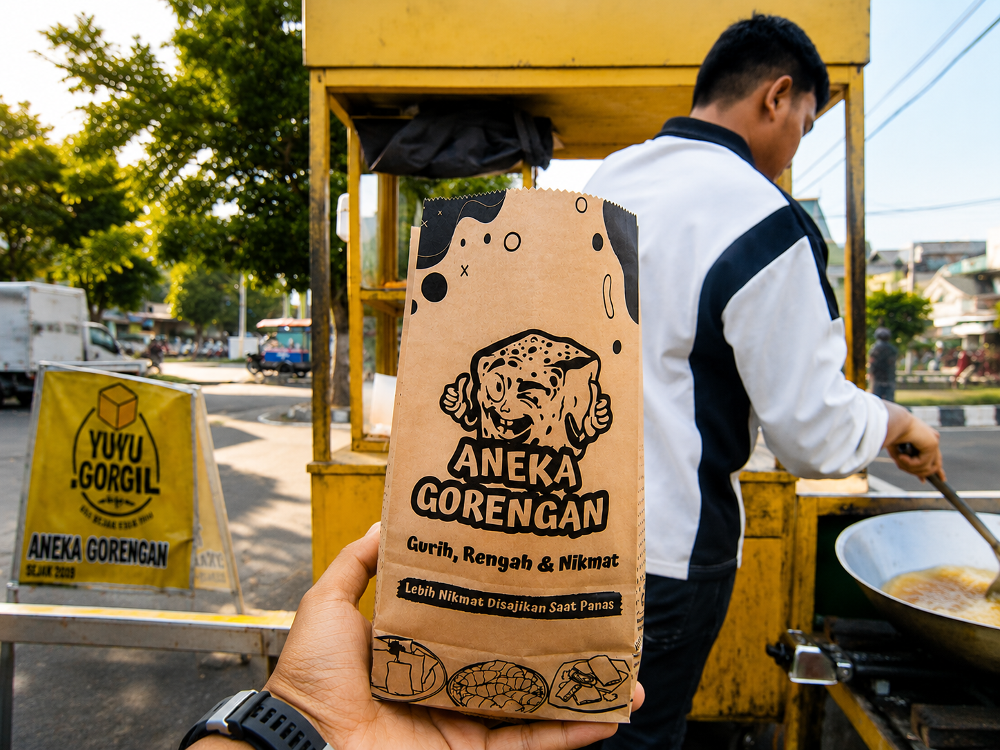

Pazrul Rozy Anshori merupakan pendiri Tahu Mungil yang memiliki visi untuk menghadirkan jajanan berkualitas dengan harga yang terjangkau.
Dengan semangat berwirausaha dan inovasi, Tahu Mungil terus berkembang dan melayani pelanggan setiap harinya.
Perjalanan awal berdirinya usaha Tahu Mungil

Tahu Mungil didirikan pada 8 Agustus 2025 dengan tujuan menghadirkan jajanan yang lezat, berkualitas, dan terjangkau bagi semua kalangan masyarakat.
Berawal dari usaha rumahan sederhana, Tahu Mungil mulai dikenal karena rasa khas tahu crispy yang gurih, renyah, dan memiliki berbagai pilihan bumbu favorit pelanggan.
Seiring berjalannya waktu, Tahu Mungil terus berkembang dengan menambah variasi menu seperti sosis bakar dan otak-otak, serta membuka outlet untuk melayani pelanggan dengan lebih baik.
🏪 Jumlah Outlet : 2 Cabang
📍 Outlet 1 : Jl. Stabat Lama, Kec. Wampu, Kab. Langkat
📍 Outlet 2 : Jl. Proklamasi, Stabat, Kab. Langkat
🕒 Jam Operasional : 10.00 WIB - 22.00 WIB
Tujuan dan fungsi website Tahu Mungil
Website Tahu Mungil merupakan website statis yang dibuat sebagai media informasi dan promosi usaha kuliner Tahu Mungil. Website ini menampilkan berbagai informasi mengenai produk, menu makanan, outlet, profil usaha, serta kontak yang dapat dihubungi oleh pelanggan.
Website ini bertujuan untuk mempermudah pelanggan dalam memperoleh informasi mengenai Tahu Mungil secara online, sekaligus menjadi sarana promosi digital untuk memperkenalkan produk kepada masyarakat yang lebih luas.
Website ini dikembangkan menggunakan HTML, CSS, Bootstrap, dan Font Awesome sebagai bagian dari tugas perkuliahan pada Program Studi Sistem Informasi. Website yang dibuat masih bersifat statis sehingga hanya berfungsi untuk menampilkan informasi dan belum terhubung dengan database maupun sistem pemesanan secara otomatis.